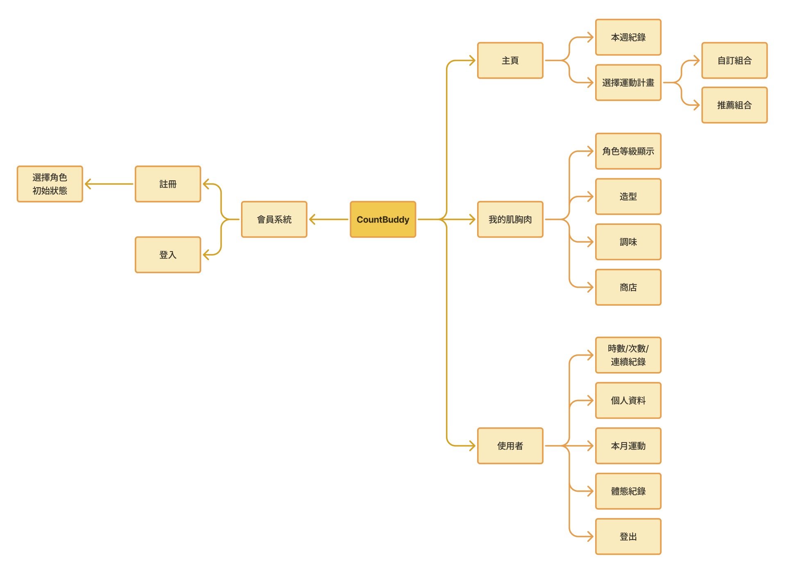
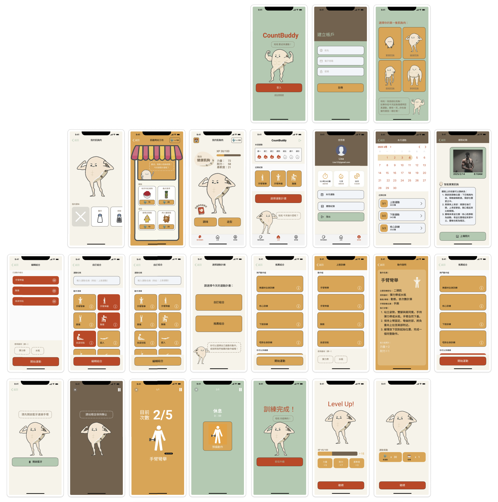

<!DOCTYPE html>
<html lang="zh-TW">
<head>
    <meta charset="UTF-8">
    <meta name="viewport" content="width=device-width, initial-scale=1.0">
    <title>CountBuddy 作品展示 | Claudia Wang</title>
    <script src="https://unpkg.com/react@18/umd/react.production.min.js" crossorigin></script>
    <script src="https://unpkg.com/react-dom@18/umd/react-dom.production.min.js" crossorigin></script>
    <script src="https://unpkg.com/@babel/standalone/babel.min.js"></script>
    <script src="https://cdn.tailwindcss.com"></script>
    <script src="https://unpkg.com/framer-motion@10.16.4/dist/framer-motion.js"></script>
    <script src="https://unpkg.com/lucide@latest"></script>
    <script>
        tailwind.config = {
            theme: {
                extend: {
                    colors: { brand: { canvas: '#FFFFFF', bgLight: '#F8FAFC', textMain: '#0F172A', textSub: '#475569', accent: '#0EA5E9' } },
                    fontFamily: { sans: ['SF Pro Display', 'Inter', 'Noto Sans TC', 'sans-serif'] }
                }
            }
        }
    </script>
</head>
<body class="bg-brand-canvas text-brand-textMain font-sans antialiased">
    <div id="root"></div>

    <script type="text/babel">
        const { motion } = window.Motion;

        function App() {
            return (
                <div class="min-h-screen flex flex-col justify-between">
                    <nav class="max-w-6xl w-full mx-auto px-6 py-8">
                        <a href="index.html" class="inline-flex items-center gap-2 text-sm font-medium text-brand-textSub hover:text-brand-textMain transition-colors group">
                            <i data-lucide="arrow-left" class="w-4 h-4 transition-transform group-hover:-translate-x-1"></i> 返回作品首頁
                        </a>
                    </nav>

                    <main class="max-w-6xl w-full mx-auto px-6 pt-6 pb-32 flex-grow">
                        {/* 🌟 海報與標題開場風 - 已修正為 CountBuddy 的內容 */}
                        <section class="grid grid-cols-1 md:grid-cols-12 gap-12 items-center mb-32">
                            {/* 左側：海報主角牆 */}
                            <div class="md:col-span-5 bg-brand-bgLight p-3 rounded-2xl border border-slate-100 shadow-md">
                                {/* 💡 提示：此處預留健身 App 海報圖片位置，你可以替換成你的海報路徑 */}
                                
                            </div>

                            {/* 右側：精簡專案資訊 */}
                            <div class="md:col-span-7 space-y-6">
                                <span class="bg-sky-50 text-brand-accent px-3 py-1 rounded-full text-xs font-semibold tracking-wider uppercase border border-sky-100 inline-block">
                                    💪 畢業專題 手機應用程式結合穿戴式裝置
                                </span>
                                <h1 class="text-4xl md:text-5xl font-black tracking-tight text-brand-textMain">CountBuddy</h1>
                                <p class="text-brand-textSub text-lg font-light leading-relaxed">
                                    一款遊戲化健身 App，透過手環記次、運動追蹤與角色養成機制，提升使用者維持運動習慣的動機。
                                </p>
                                
                                <div class="grid grid-cols-2 gap-4 pt-6 text-sm border-t border-slate-100">
                                    <div><h4 class="text-slate-400 text-xs font-bold mb-1">專案類型</h4><p class="font-medium">遊戲化運動 App</p></div>
                                    <div><h4 class="text-slate-400 text-xs font-bold mb-1 tracking-wider">專案成員</h4><p class="font-medium">許雅涵、王雨晴、李恩亞</p></div>
                                    <div><h4 class="text-slate-400 text-xs font-bold mb-1 tracking-wider">我的核心角色</h4><p class="font-medium">UI/UX 設計 & 角色設計 & 宣傳片製作</p></div>
                                    <div><h4 class="text-slate-400 text-xs font-bold mb-1">使用工具</h4><p class="font-medium">Figma, Final Cut Pro</p></div>
                                </div>
                            </div>
                        </section>

                        {/* 1. 產品宣傳影片 */}
                        <div class="space-y-6 mb-24">
                            <h3 class="text-xs uppercase tracking-widest text-slate-400 font-bold">🎬 宣傳影片</h3>
                            <div class="bg-brand-bgLight p-4 rounded-2xl border border-slate-100 shadow-sm">
                                <div class="relative pb-[56.25%] h-0 overflow-hidden rounded-xl bg-black">
                                    {/* 💡 提示：請將下方 src 換成你的 CountBuddy 宣傳影片 YouTube 連結 */}
                                    <iframe class="absolute top-0 left-0 w-full h-full border-0" src="https://www.youtube.com/embed/qM0eeYtPOug" allowfullscreen></iframe>
                                </div>
                            </div>
                        </div>

                        {/* 2. UI 介面 */}
                        <div class="space-y-6 mb-24">
                            <h3 class="text-xs uppercase tracking-widest text-slate-400 font-bold">📱 App 功能架構與 Mockup 展示</h3>
                            <div class="bg-brand-bgLight p-6 md:p-12 rounded-2xl border border-slate-100 space-y-8 flex flex-col items-center">
                                {/* 💡 提示：請更換成你導出的 CountBuddy Mockup 截圖路徑 */}
                                
                                
                            </div>
                        </div>

                        {/* 行動呼籲 */}
                        <div class="text-center py-16 border-t border-slate-100">
                            <h4 class="text-xl font-bold mb-4">探索介面操作？</h4>
                            <a href="https://www.figma.com/proto/PD8B2Ks91hLzQaODeZlzsN/%E7%95%A2%E6%A5%AD%E5%B0%88%E9%A1%8CUI?node-id=16-1341&p=f&t=49ZSaYWL1087vSzS-0&scaling=scale-down&content-scaling=fixed&page-id=15%3A100&starting-point-node-id=16%3A1341" target="_blank" class="inline-flex items-center gap-2 bg-brand-textMain hover:bg-brand-accent text-white px-8 py-4 rounded-full text-sm font-medium tracking-wide transition-colors duration-300 shadow-md">
                                開啟 Figma 互動式原型 <i data-lucide="external-link" class="w-4 h-4"></i>
                            </a>
                        </div>
                    </main>

                    <footer class="bg-brand-bgLight border-t border-slate-100 py-12 text-center text-xs text-brand-textSub">
                        © 2026 Claudia Wang.
                    </footer>
                </div>
            );
        }

        const root = ReactDOM.createRoot(document.getElementById('root'));
        root.render(<App />);
        setTimeout(() => lucide.createIcons(), 100);
    </script>
</body>
</html>
